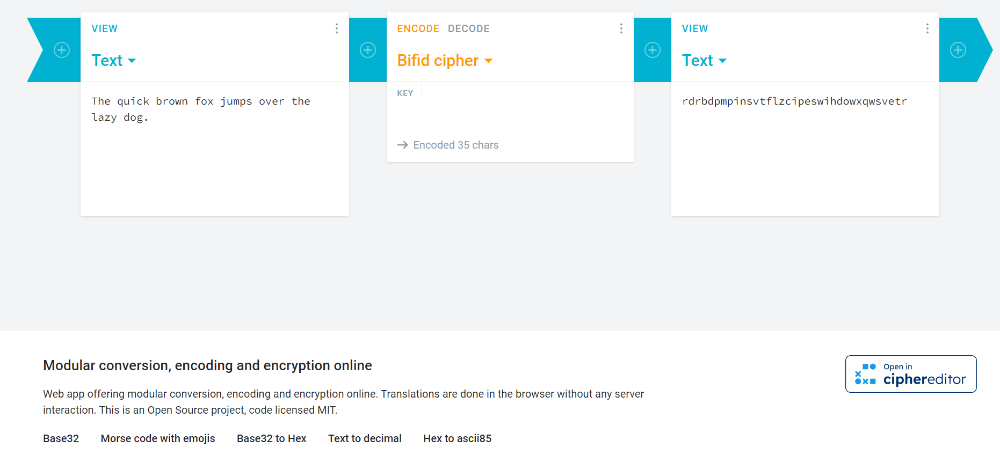
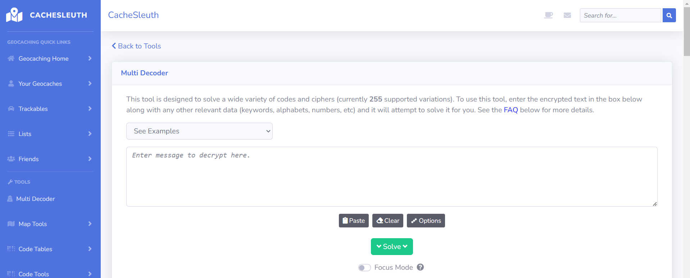
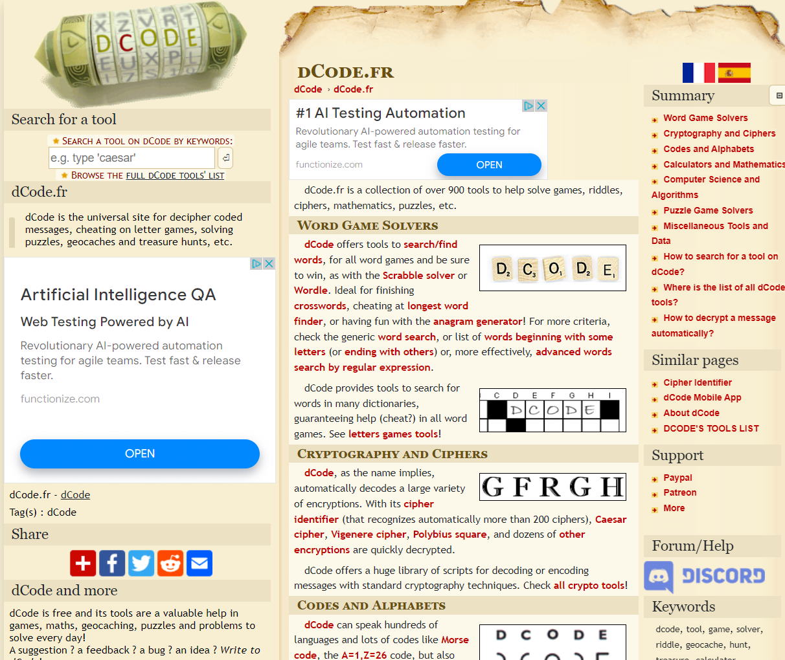
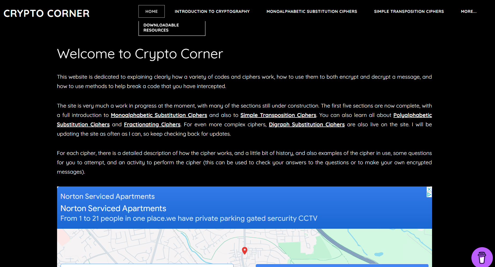

Design Inspiration
There area series of websites that inspired the colours, the cipher selection and some functionalies to go into SECRETO, there is the top 4 websites that I investigated the most through the design stage of this project.
1. Cryptii Website
"Cryptii” distinguishes itself due to the clean frontend design, presenting a well-organised cipher’s library which are grouped by their different type. It provides a summary at the end of each cipher’s page, which is useful, but there is not enough detail on this description or even show how the cipher works. This served as inspiration for the side bar on each cipher on this website, attempting provide more context to the user that is being first introduced to the cryptography.
2. CacheSleuth Website
"CacheSleuth" has a variety of unique and playful ciphers, including “Cow code”, “Flags”, “Dancing Men” from the Sherlock series, which inspired the decision to choose the Dancing Men as one of the ciphers for this project.
3. Dcode Website
“Dcode” offers a comprehensive range of features, including detailed information and history for each cipher. However, this site’s outdated design and excessive pop-ups ads compromise its navigability. This served as inspiration to provide a clean interface to the user
4. CryptoCorner Website
"CryptoCorner" provides an extensive cipher information, from historical background to usage instructions,early organised in its navigation bar. Each cipher has its own encrypt and decrypt method, and something outstanding was the ability to display the grid in the Rail Fence cipher. Something that I would have loved to implement if it wasn't for the time constraint, so it's added in the improvements section.
